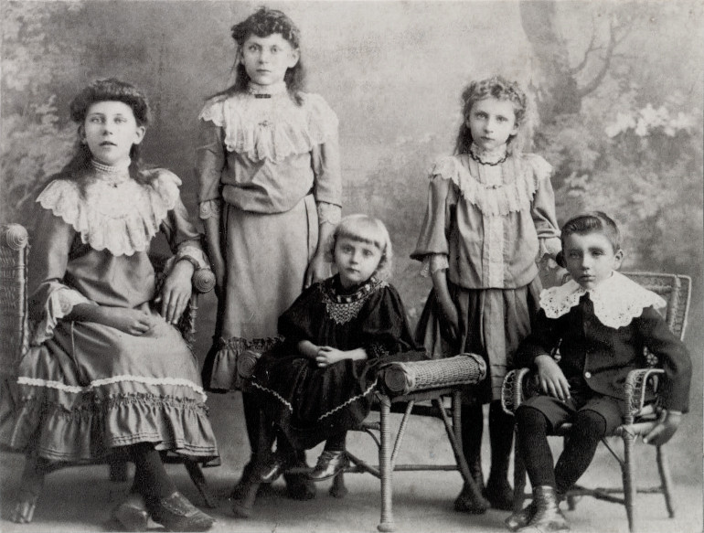

-

Old Postcards of Ahrensböck

The Suchtings
As a single man, our twice great-grandfather Friedrich Süchting (later spelt Suchting), migrated to Australia. This was in 1864 from a place in the far north of Germany called Ahrensböck (now spellt Ahrensbök) in Holstein. After much upheaval, warring and political strife Holstein would later be incorporated into a newly formed German state called Schleswig-Holstein.
Ahrensbök

Holstein on the Jutland Peninsula
Some Historical Background
Holstein lies geographically at the lower end of the Jutland Peninsula and has a very colorful background. In 1111 Holstein became the most northern state of the Holy Roman Empire. It was originally the homeland of an ancient Saxon tribe of Germanics called the Holsten (Holcetae in Latin), known as worshippers of rivers, forests, mother earth, and the Irminsul, the divine tree which acted as a great pillar connecting heaven and earth. The name Holsten, previously Holsaten, is a contraction of Holtsassen, literally meaning "forest dwellers".
The tribe itself was made up of noble aristocrats, highly regarded free warriors, and a bunch of free men. Their ancient and preserved customs strictly controlled social behaviour and were intolerant towards marriage to someone of a differing social standing and especially to an outsider, even if from another of the Germanic tribes.

Depiction of the Saxon Pirates
Holstein in the Grip of the Sea
Peace was not a Saxon thing and as land became scarce, they headed off in all directions to occupy someone else's, with force, and lots of it. Naturally enough, they invaded southwards into the northern part of Germany, an area still known as Saxony (Sachsen). With their own lands surrounded by sea they readily took to the water, becoming known as the pirates of both the western seaboard of the continent and the eastern seaboard of Britain. The regional names of Essex (East Saxons), Wessex (West Saxons) and Sussex (South Saxons) are remnants of the kingdoms they lorded over.
In their homeland in the Holstein area they also made their presence felt, and naturally enough this generated enemies from all sides, especially with the Danes to the north and other Germanic tribes to the south. Eventually the Saxons were defeated by the Germanic tribes known as the Franks. That wasn't the end of it though, and warring continued but this time it was coming from the outside.
Holstein after the Frankish Takeover (12th century) and Christianisation of the Saxon tribes
The turquoise area shows new German settlement.
The brown area, inhabited by Slavs, included Wagria.
The white area remained basically uninhabited.Wagria, The Promised Land
The actual region where the Süchtings and their families were living lay in the southern part of what was known as Wagria, in the far north of Germany and known today as Ostholstein (East Holstein). The word Wagria is derived from the Wagri, a Slavic tribe, literally meaning "the people living by the bays". When the Franks overran the Saxons, Holstein had three distinct areas, with Ditmarsh to the north-west, Holsten to the north-east and Storman, which included Hamburg, to the south. In the 12th century, Count Adolf II of Schauenburg and Holstein instigated German settlement of the area, including Wagria which had already been inhabited by Slavic migrants since the 8th century.
The chronicler, Helmold of Bosau, wrote in 1143:
"Then a countless number of people from different tribes left, took their families and possessions with them and went with Count Adolf in Wagria to take possession of their promised land. Initially, those from Holsten were given the most sheltered area west of Segeberg, on the River Trave, on the Schwentine flood plain and everything from the Schwale to the Grimmelsberg and Lake Ploen. The country around Dargun was settled by the Westphalians, the Eutin area by the Dutch and Suesel by the Frisians. The Plön area remained uninhabited however. He allowed Oldenburg, Lütjenburg and other coastal areas be colonised by the Slavs, who had to pay taxes to him."
Holstein around 1730, with southern Wagria shown in yellow.
The black outline on the inset shows where the larger map is found within the Jutland Peninsula and Holstein itself.
The red rectangles show the places where Friedrich's ancestors were located:-
top row: Gnissau (Gnissow), Ahrensbök (Ahrensbocke), Sarkwitz, Gleschendorf
middle row: Cashagen (Kushagen), Curau (Kurow)
bottom row: Heilshoop (Heilshope)Some Historical Foreground
Following the dissolution of the Holy Roman Empire in 1806, and a national bankruptcy of Denmark in 1813, the German Confederation was finally formed in 1815. This added tension to the ongoing struggle between Prussia and Austria over regional supremacy and brewed plenty of political strife in the area of Holstein.
Yet that wasn't enough to keep the powerful busy. In the aftermath of the Napoleonic Wars with increasing unrest in the original states of the Holy Roman Empire, there was an impetus towards nationalism and the formation of a German Empire which would come into being in 1871.
Of course, before that could happen there needed to be a lot more warring. Denmark already had its paws on Schleswig and wanted Holstein to have a matching pair, but so did Prussia. From 1815 until 1864, the year Friedrich migrated, Holstein was a member of the German Confederation. King Frederick VII of Denmark died in 1863 and his replacement, Christian IX had made his claim to the throne through a female line. From another line, the Duke of Augustenborg laid claim to the Duchies of Schleswig and Holstein.
An old postcard of Ahrensböck
Even though Prussia and Austria had their differences, they managed to join forces and lead the German Confederation to push the Danes back out of Schleswig and defeat that claim. In fact under the rule of Otto von Bismarck who had been appointed Chancellor by King Wilhelm I, Prussia went on to take over the whole of Denmark.
This was not without human trial and tribulation and gave much grief to the local inhabitants. The political and administrative changes to the place contributed greatly to an already surging flood of migration out of the place.
Many ended up migrating to America and Australia.

The Ancestors of Frederick Suchting (Johann Hinrich Friedrich Süchting)
click the button on the left to show or hide the ancestors
-
- Johann Hinrich Friedrich Süchting
1838–1917
*Ahrensbök- Hinrich Thomas
Süchting
1803–1838
*Gnissau - Margaretha Maria Meinsen
1812–1877
*Cashagen
- Hinrich Thomas
- Johann Hinrich Friedrich Süchting
The old church in Gnissau where Friedrich Süchting's father Hinrich Thomas, and grandfather Johann Hinrich Christopher were baptised.
Vorwerk Neuhof where Friedrich's grandmother, Engel Margaretha Speetzen, was born. Her father, Hans Hinrich Speetzen was born in Wahlsdorfer Holz but moved to the Vorwerk Neuhof with his wife, Anna Beckmann, before the birth of their daughter.

A postcard of Curau showing the church where Friedrich's great-grandfather on his mother's side, Cuno Marquard Groth, was the Sacristan (Küster), the official keeper of the church.
1803 Birth/Baptism of Friedrich's father,
Hinrich Thomas Süchting in Gnissau
born: March 2, baptised: March 6
Father: Johann Hinrich Süchting
Mother: Engel nee Speetzen
Witnesses: 1. Hinrich Christian Dittmann, 2. Thomas Jacobs, 3. Christina Marie Kalm in Gnissau1812 Birth/Baptism of Friedrich's mother,
Margaretha Maria Meinsen in Cashagen
born: March 24, baptised: April 5
Father: Claus Detlev Friedrich Meinsen
Mother: Catherina Margaretha nee Groth
Witnesses: 1. Catharina Margaretha Schwarz, 2. Maria Klein, 3. Thomas Kibbel in Cashagen
1803 Census for Holstein
In 1803, Friedrich's grandparents, Johann and Engel, were living in the Hohenhorst Vorwerk near Ahrensbök along with the first two of their children and three other workers or relatives.
Johann Hinrich Kristoph is listed as a 'Parzelist', a tenant-holder of a parcel of land which was divided up from the original Vorwerk.1803 Census for Holstein
In 1803, Friedrich's great-grandmother, Anna, was also living in the Hohenhorst Vorwerk near Ahrensbök along with her daughter, Maria, and son-in-law, Hinrich Kristian Dittmann, and their three children, Johann, Engel and Hinrich.
Anna Justina Süchting nee Drükhammer, 52, widow, was enjoying a life of retirement.

Ipswich about 1862 (unknown artist)
The Start of a New Dynasty
One of those who migrated from Holstein was our great-great-grandfather, Friedrich Suchting, who headed for Australia, namely to the newly created colony of Queensland. He left Hamburg on the 'Beausite' in October 1864 and arrived at Moreton Bay in February the next year.
Friedrich Suchting and Wilhelmina Riek
Only a few months later, his future wife, Wilhelmine Riek left her home in Gerswalde in Brandenburg to board the 'Helene' in Hamburg in August 1865. The pair of them were married on the 27th May 1870 in the small wooden Baptist Chapel in West Street Ipswich by the Baptist minister, Rev T. S. Gerrard. At the time they were both members of the Baptist Church, but that would soon change.
Friedrich, whose full name was Johann Hinrich Friedrich Süchting, was born on the 10th of March 1838 to Hinrich Thomas Süchting and Margaretha Maria Meinsen (or Meynsen). He was 25 years old on his wedding day.
Wilhelmine's full name was Johanne Wilhelmine Emilie Riek. She was 18 when she married Friedrich, having been born on the 15th of February 1852 to Christian Friedrich Riek and Dorothea Louise Spann and baptised on March 7 in Gerswalde in the Uckermark, Pommerania. Strangely the record of her death says she was born on the 14th.

1838 Baptism of Johann Hinrich Friedrich Suchting
Born 10 March, Baptised 1 April, at Hohenhorst Wildkoppel (Vorwerk Ahrensbök) Johann Hinrich Friedrich, son to Hinrich Thomas Süchting of the Hohenforst Wildkoppel and his wife Margaretha Maria nee Meinsen (or Meynssen)

1864 Friedrich Süchting's departure from Hamburg
Place of birth - Ahrensbök, Holstein
Farmer (Landmann) Age 261852 Baptism of Johanne Wilhelmine Emilie Riek
At Gerswalde, Born 15th February, Baptised 7th March,
Full name: Johanne Wilhelmine Emilie
Father: Workman Friedrich Riek, Mother: Dorothea nee Spann
Godparents: Master-Dyer Güldenstein and Miss Wilhelmine Eik

1865 Wilhelmine Riek's departure from Hamburg
Aged 13, with her parents, Friedrich, aged 39, and Dorothea, aged 41
as well as her 11 year old younger brother, Wiilhelm
All from Potzlow, Prussia
Friedrich is listed as a workman (Arbeitsmann)

c.1890 Friedrich Suchting and Wilhelmina Riek with their youngest children, Adolph (4), Martha (8) and Alfred (1).
Around the time that the Church of Christ was formed in Queensland, the Suchtings joined in their numbers. A new church building was opened in 1886 in Vernor near Fernvale and Friedrich was there to deliver an address. By 1902, Friedrich had been both choir-leader and preacher at Vernor for 17 years. Singing was in both German and English and sometimes, especially at a celebration held in their honour, Friedrich and Wilhelmine sang as a duet.At the 75th anniversary of the Fernvale State School, Frederick was remembered as being the very first school committee's secretary. That would have been in 1874, only four years after he was married.
Early in 1905, the year before Wilhelmine passed away, she had saved her son's house from being burnt down late one night. While William and Annie were away in Ipswich, a curtain had caught onto a burning candle and was set alight. Wilhelmine was the first on the scene and managed to throw the blazing curtains out the window. Only the window frame and walls were charred but the worst had been averted.
There was a lengthy obituary in the Queensland Times when Wilhelmine died on the 7th of July, 1906, aged 54. Friedrich died on the 27th of June, 1917, aged 87.
Johann Hinrich Friedrich Süchting (1838–1917) and Wilhelmine Riek (1852–1906)
» Friedrich Suchting (1838–1917)
married Wilhelmine Riek (1852–1906) in Ipswich, 27.05.1870and they had the following children:
Wilhelm Suchting 10.06.1871 –
*Vernor16.01.1926
†unknownm. Anna Adermann in Brisbane, 20.12.1889 Anna Suchting 10.02.1873 –
*Fernvale04.11.1924
†Eskm. Rudolph Pieper in Qld, 13.03.1895 Frederick Suchting 18.07.1874 –
*Vernor03.06.1962
†Qldm. Bertha Amelia Auguste Profke in Qld, 04.01.1902 John Suchting 14.10.1875 –
*unknown25.10.1875
†unknown(11 days old) John Suchting 01.02.1877 –
*unknown13.11.1954
†unknownm. Mathilda Dennien in unknown, 04.03.1899 Otto Suchting 05.04.1879 –
*unknownunknown
†unknownmarriage status unknown Philip Suchting 27.03.1881 –
*unknown18.07.1927
†Auckland NZm. Eleanor Margaret Dalliston Nash in New Zealand, 1909 Martha Suchting 01.10.1882 –
*unknownunknown
†unknownm. August Friedrich Wilhelm Dennien in Qld, 26.04.1904 Alvina Suchting 14.09.1884 –
*Qld01.12.1893
†unknown(9 years old) Adolph Suchting 19.05.1886 –
*Qld05.11.1931
†Murgonm. Annie Marie Bulow in Qld, 21.12.1910 Alfred Suchting 17.08.1889 –
*unknown14.05.1947
†unknownm. Elizabeth Hill Houston Singleton in Qld, 07.09.1916
Some of the children of Friedrich and Wilhelmine:
The Next Generation
Almost all of the children are known to have started their own families. Otto seems to have gone his own way, working at one time as a warden in the prison service and a few years later as a sawyer. Philip also was hard to track but he did live and get married in New Zealand and eventually died over there as well. What follows is a brief account of the children, starting with the eldest.
» William Suchting and Annie Adermann
William managed to be in the news quite a bit. In his late twenties, at a grand concert and ball under the auspices of the Rose of Fernvale Lodge of the Grand United Order of Oddfellows, he not only sang but also played violin.
On the Vernor quoits team, William, together with his brothers Philip, and John who was also the team skipper, managed to beat the opposing team from Lowood. The Pieper brothers, Rudolph and Adolph, were also on the team. In the return match some weeks later, the Vernor team repeated their victory.William Suchting (in the middle with large moustache)
and the staff of The Crown Engineering Works, Brisbane
With his son Doug, William laid the foundation for the Crown Engineering Works where he remained working until his death in 1926. The thriving business grew and moved from the Brisbane CBD to over the river in South Brisbane. In the late 1940's it was taken over by Doug's sons John and Bill. Ever since the late 1970's John's sons Ray and Ian have been running the business.
In 1911 William was in the news again for having invented a portable cane trash cutter. In 1922, he delivered sermons upon the request of the Toowoomba Church of Christ community. As president and general scecretary for the Associated Churches of Christ he was on many committees, and was for 40 years considered to be a highly regarded and esteemed member. The news also took great interest in his sudden death upon a tram one Saturday morning when he was travelling to his city workplace from his home in Coorparoo.» Wilhelm Suchting (1871–1926)
married Anna Adermann (1867–1938) in Brisbane, 20.12.1889and they had the following children:
Hilda Anna Mildred Suchting 08.03.1891 –
*Qld14.05.1891
†Qld(2 months old) Sydney Pearce Suchting 20.03.1893 –
*unknown21.08.1960
†Qldm. Madeleine Mary Cunningham in Qld, 23.03.1918 Douglas William Suchting 14.08.1895 –
*unknown13.08.1972
†Qldm. Barbara Eileen Bowler in Brisbane, 22.09.1923 Ernest Percival Suchting 20.10.1896 –
*Fernvale01.08.1978
†Newcastlem. Mary McIndoe in Qld, 26.10.1927 Alice Regina Suchting 07.04.1898 –
*Qld13.07.1989
†Qldm. James Williamson in Qld, 14.12.1929 William Frederick Suchting 02.05.1900 –
*unknown27.02.1952
†Qldm. Marjorie Greenup Lamb in Qld, 15.12.1923
Children of William and Annie:

Annie and William's son Sydney Pearce (pictured third from left) was a member of the Cooee Quartette who won the male quartette competition at the Windsor Eistedsfod in 1927.

Another of Annie and William's sons, Ernest Percival, who became a photographer.
» Anna Suchting and Rudolph Pieper
read The Pieper Story » Rudolph and Anna are our great-grandparents. Their daughter Alma and her husband Ben Schneider are our grandparents. The full story of the Pieper families is told elsewhwere.» Rudolph Pieper (1875–1945)
married Anna Suchting (1873–1924) in Qld, 13.03.1895and they had the following children:
Adelaide Alvena Pieper 25.11.1895 –
*Lowood03.07.1970
†Brisbanem. William Pfeffer in Ipswich, As, 04.09.1915 Eva Bernice Pieper 06.08.1898 –
*Fernvale22.05.1991
†Caloundram. Percy Edgar Muckert in Qld, 1914 Alma Dorothy Pieper 09.10.1901 –
*Vernor06.12.1984
†Ipswichm. Benjamin Walter Schneider in Ipswich, 01.09.1924 Alexander Rudolph Pieper 04.09.1903 –
*Qld30.03.1981
†Kippa Ringm. Alma Ethel Boettcher in Marburg, 01.02.1928 Mildred Anna Pieper 05.09.1906 –
*Ipswich27.10.1948
†Townsvillem. Ernest Allan MacDonald in Qld, 14.04.1928
m. George Morten McClelland in Qld, 30.08.1941
 From left: Adelaide, Eva, Millie, Alma, Alec
» Friedrich Suchting and Bertha Profke
Because Frederick and his father both had the same name it is difficult to identify which person is the actual subject of a news item mentioning the name. Sometimes senior or junior was placed after the name making it clear but that didn't always happen. Otherwise, it seems that Frederick (or Friedrich) was unlike William and John and rarely in the limelight.
Frederick was hired by the railways on December 4, 1912, with his brother Adolph having already been working there since 23rd August, 1909. At the time of the passing of Frederick's wife Bertha, they had been residing in Red Hill in Brisbane. His brother William and his family had also been living in Red Hill at the time.» Frederick Suchting (1874–1962)
married Bertha Amelia Auguste Profke (1879–1938) in Qld, 04.01.1902and they had the following children:
Victor Fredrick Suchting 11.08.1902 –
*Qld01.06.1984
†Pine Mountainm. Ellen Mary Smith in Ipswich, 1955 Mabel Frances Suchting 31.05.1904 –
*Qld16.07.1946
†Qldm. Norman Alexander Peters in Qld, 21.01.1928 Hilda Bertha Suchting 05.05.1910 –
*Qld04.12.1927
†Qld(17 years old) unmarried Gladys Pearl Suchting 04.06.1912 –
*Qld27.08.1950
†Qldm. Henry Thomas Stevens in Qld, 20.08.1932 Edith May Suchting 21.03.1914 –
*Qld03.01.1955
†Qldm. Arthur James Barbour in Brisbane, 20.03.1937
» John Suchting and Mathilda Dennien
In November 1912, there was a surprise party held at Mr. John Suchting's home at Vernor with 50 guests singing "for they are jolly good fellows", playing games and generally having a good time. The Piepers, Muckerts, Bulows and many more could be counted amongst the visitors.
Soon after, the family moved to Murgon, to Boat Mountain to be precise. There, in January 1924, John Suchting struck water on his property for the second time. For farmers of course, that's almost as good as striking oil. He reported that there was enough water for more stock than the property could carry.
On Easter Monday 1924 the Redgate Sports Club held a race day in Mr. C. Goschnick's paddock at Redgate near Murgon. John's wife won the Ladies' Nail Driving Contest. A couple of months later, John and Mathilda attended the Brisbane Exhibition and later visited their son Arthur working at the Beenleigh Poilce Station. They then met up with John's sister Martha and her husband August who had been touring by car, visiting Brisbane, Kalbar and the Fassifern District.
A few months later again, John, Mathilda, Martha and August were hosts to John and Martha's brother William and his wife Anna who were holidaying in Murgon from their home in Brisbane. In 1925 at the fifth annual exhibition of the Murgon Pastoral, Agricultural and Horticultural Society, John won 1st place for his Cocker Spaniel bitch, and his son William had the all-round champion bitch.» John Suchting (1877–1954)
married Mathilda Dennien (1879–1937) in unknown, unknownand they had the following children:
William Arthur Suchting 04.02.1900 –
*Qld27.12.1957
†Qldm. Dorothy May Waller in Qld, 06.03.1923 Alvena Evelyn Martha Suchting 07.03.1904 –
*Brisbane18.12.1992
†Montom. Frederick aka Fritz Goschnick in Murgon, 04.09.1923 Lillian Mildred Suchting 10.09.1909 –
*Qld05.04.1984
†Qldm. Thomas Henry Lawless in Qld, 21.08.1937 George Alexander Suchting 01.02.1912 –
*Fernvale17.05.1989
†Qldm. Ailnea Augustine Kenneally in Qld, 25.03.1933 Doris Gladys Suchting 23.03.1914 –
*Qld26.05.1990
†Qldm. Frederick Miles Burley in Qld, 25.07.1940

John and Matilda and their children

Fritz Goschnick and Alvena Suchting, 1923
» Otto Suchting and His Wife
The first mention of Otto was when he was a groomsman at his sister Martha's wedding in 1904. That same year he was accepted into the Prison Service as a Warder, on probation. On the 11th of June, 1908 there was an announcment in the Queensland Goverment Gazette that His Excellency the Governor was pleased to direct that Warder Otto Suchting be dismissed from the Prison Service.
On Monday, February 9th 1914, there was a report in the Telegraph that "Otto Suchting, a sawyer of Narangba north coast line, severely lacerated the fingers of his right hand on Saturday morning. They were caught in a circular saw. He was brought to Brisbane by train and taken to the General Hospital".
Much later, in 1933, a 55 year old married man, named Frank Suchting, who was the foreman of a railway bridge repair gang near Strathpine, fell from the bridge and was (also) conveyed to the General Hospital. There is no record of any Frank Suchting being born, marrying or dying, so it is very likely that Otto's full name was Otto Franz Suchting and later in life went by the name of Frank.
» Philip Suchting and Eleanor Margaret Dalliston Nash
Philip was listed in the Auckland West Electoral Roll for 1905 as living at Wallace Street and working as a "conductor". In 1909, still in New Zealand, he married Eleanor and in 1911 and they were living at 104 Richmond Road, Grey Lynn, a part of Auckland. At that time Philip was working as a "motorman". By 1914 they apparently had moved next door to 102 Richmond Road. In 1978, seemingly the only Suchtings listed in New Zealand are Alan and Lilian May living in Glen Eden in Auckland, a few kilometers from where Philip and Eleanor had been living.
» Martha Suchting and August Dennien
Martha and August were married in 1904 at the bride's parent's residence at Vernor. The bridesmaids were Miss Amelia Cronau who had made the bride's silk lustre dress and Miss Helena Adermann.
Martha and August with their children
The groomsmen were August's brother Albert and Martha's brother Philip. The Suchtings, the Piepers and the Adermanns and lots more close friends and relatives were all there to join in on the celebrations.
In 1910, a party was held in their honour as it had been assumed they would soon be leaving to live in Murgon, which they did, in 1911. Martha's brother John soon followed them to Murgon with his family.
The Brisbane Courier in an article about Thriving Burnett Settlements reported at the end of 1930 that August had been in the area for more than 18 years. He had a very fine farm of 440 acres with 140 acres under cultivation and raised pigs and about 50 dairy cows.» August Friedrich Wilhelm Dennien (1881–1953)
married Martha Suchting (1882–1951) in Qld, 26.04.1904and they had the following children:
Norman Edwin Dennien 20.04.1905 –
*Murgon17.07.1984
†Gympiem. Elisabeth (Elsie) Martha Pokarier in Qld, 22.04.1925 Cyril Stanley Dennien 13.05.1907 –
*Qld02.06.1964
†Qldm. Martha Wilhelmine Stephan in Qld, 31.12.1930 Harold Neville Dennien 03.09.1909 –
*Ipswich18.02.1951
†Gympiem. Clara Ernestine Stephan in Qld, 17.06.1931 Ronald Wilfred Dennien 29.08.1910 –
*Qld22.03.1911
†Qld(7 months old) Eileen Mabel Dennien 07.06.1912 –
*Qld16.09.1986
†Qldm. George James Guppy in Qld, 16.03.1935 Gordon Edgar Dennien 08.09.1922 –
*Murgon25.01.1985
†Hervey Baym. Beryl Esmie Hay in Qld, 07.10.1944
» Adolph Suchting and Annie Bulow
» Adolph Suchting (1886–1931)
married Annie Marie Bulow (1893–1962) in Qld, 21.12.1910and they had the following children:
Rene May Suchting 28.01.1912 –
*Qld02.11.1987
†Qldm. Archie Vieritz in Caboolture, 25.10.1930 Murlen (Merle) Miles Suchting 17.10.1916 –
*Qld09.07.2000
†Goomerim. John Clifford Brown in unknown, 15.10.1939 Heather Doreen Suchting 25.07.1929 –
*Maryborough14.12.2010
†Caloundram. Ronald William Young in unknown place, unknown date

Annie and Adolph
» Alfred Suchting and Elizabeth Hill Houston Singleton
Alfred seemed to have had a spot of bother with domestic duties and responsibilities. One day he upped and left home, preferring to live in a tent. The newspapers were quickly on the case and followed the proceedings from the moment his wife Elizabeth had filed her complaints. By the time of the hearing for the divorce, Alfred had moved in with his 17 year old daughter Myrtle and her husband John. Myrtle had been married since the year before, when she was 16.
When asked by his wife Elizabeth if he intended to return, she was told that he wouldn't because he wouldn't be happy. In the courtroom, when asked if the woman being pointed out was his wife he said "she's supposed to be". When Elizabeth was asked if her husband was a drinker and did he work, she told the court he was a heavy drinker and he would work one week and take a month off. The decree nisi to dissolve the marriage was declared after a total of nine minutes and noted as the fastest in recent history.
To support herself Elizabeth had been working a time share dairy farm, which had been doing well. She remarried a year or so later.» Alfred Suchting (1889–1947)
married Elizabeth Hill Houston Singleton (1897–1983) in Gympie, 07.09.1916and they had the following children:
Myrtle Cora Suchting 28.09.1916 –
*Qld20.10.2004
†Qldm. John Rail in Qld, 20.07.1933 Mervyn Charles Suchting 12.07.1918 –
*Qld18.11.1972
†Qldm. Rose May Noble in Qld, 28.01.1939 Descima Daphne Lavina Suchting 09.02.1922 –
*Qldunknown
†unknownm. Robert Roy McDonald in Qld, 08.02.1941
-


{kind=link}
{kind=link}
{kind=link}
{kind=link}
{kind=link}
{kind=link}
{kind=link}
{kind=link}
{kind=link}
{kind=link}
{kind=link}
{kind=link}
{kind=link}
{kind=link}
{kind=link}
{kind=link}
{kind=link}
{kind=link}
{kind=link}
{kind=link}
.jpg){kind=link}
{kind=link}
About Us
We are the descendants of Anglo-Scottish-Prusso-Germanic Australian migrants who settled in the newly formed colonies of New South Wales and Queensland in the nineteenth century. The idea behind these pages is to present the stories and characters of those early settlers along with information about their origins, descendants, families, whereabouts and activities.There are often themes running through their struggles and achievements telling a tale of resourcefulness and hardships in an alien world. The paradox of Australia as an ancient and raw continent and as a 'New World' portrays a collision of ideals and realities yet still shows a continuity in how those people dealt with everyday life.